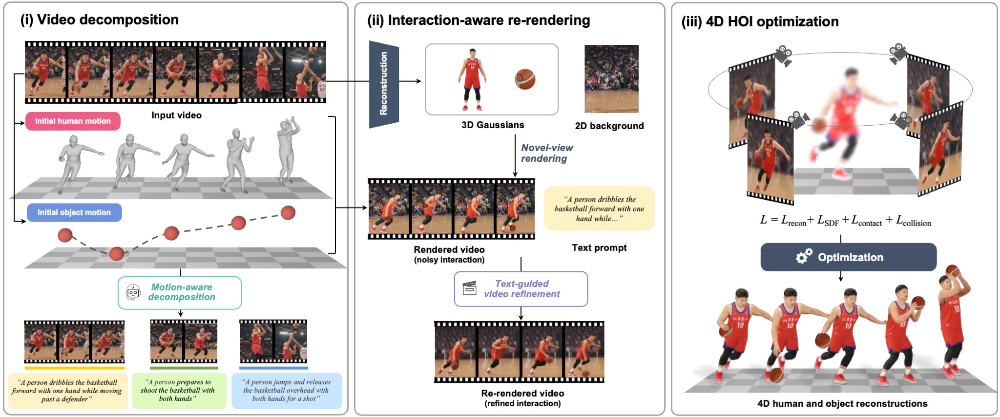

Joint 4D reconstruction of a human and object from a monocular video is essential for understanding how people interact with their environment. Despite recent progress, this task remains challenging for two main reasons. First, an interaction video often contains multiple sub-actions, making it difficult for a single global description to identify the interaction state at each moment. Second, severe human-object occlusion in a single-view video provides insufficient geometric evidence and often leads to inconsistent reconstructions.
To address these challenges, we introduce HORIA, a framework built upon two core designs. First, motion-aware video captioning decomposes the input into temporally grounded, semantically distinct sub-actions and assigns a specific text description to each interaction phase. Second, an interaction-aware re-rendering pipeline renders the initial 4D human and object from novel viewpoints and refines those renderings with a text-guided video diffusion prior. The resulting novel-view videos provide auxiliary supervision that enables accurate, geometrically consistent, and temporally coherent 4D reconstruction across diverse interaction scenarios.

@misc{nam2026horia,
author = {Nam, Hyeongjin and Lee, Taeryung and Jung, Daniel Sungho and Lee, Kyoung Mu},
title = {{HORIA}: 4D Human-Object Reconstruction via Temporally Grounded Novel-View Video Generation},
year = {2026},
note = {Under review},
}